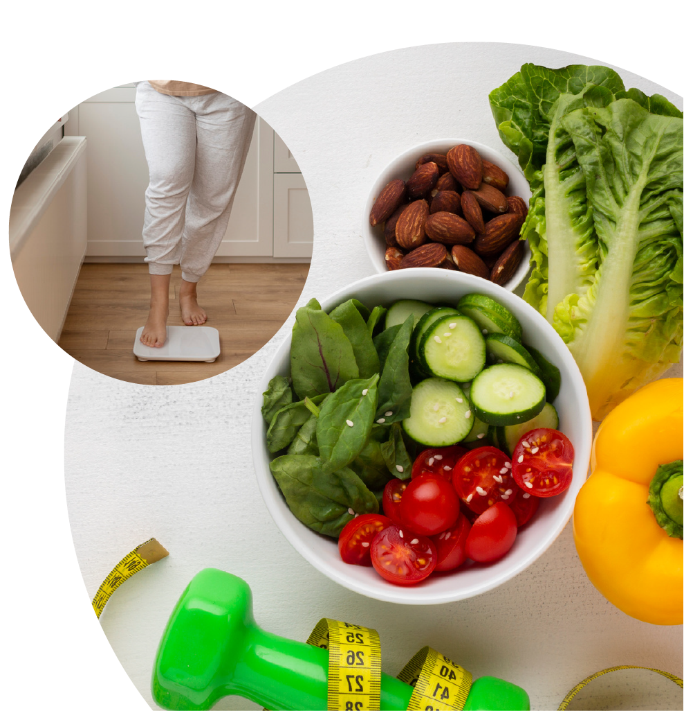

Chegou a hora de ser fitness!
Dieta da vez? Aqui não!
Acreditamos em uma alimentação consciente, não em restrições.
Descubra receitas que cabem no seu estilo de vida e fazem você se sentir incrível – dentro e fora da cozinha. Planos alimentares personalizados, Receitas saudáveis e saborosas, Dicas de nutricionistas especializados, e muito mais!
Clique em Cadastrar e comece sua jornada para uma vida mais equilibrada e saudável!
